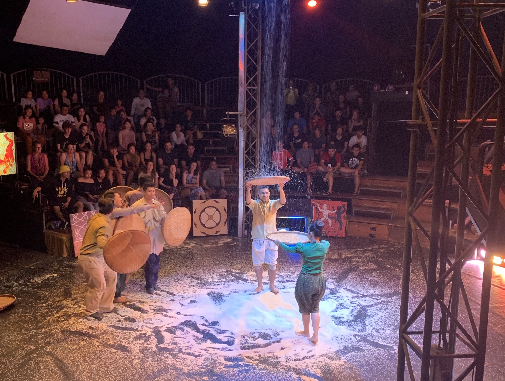
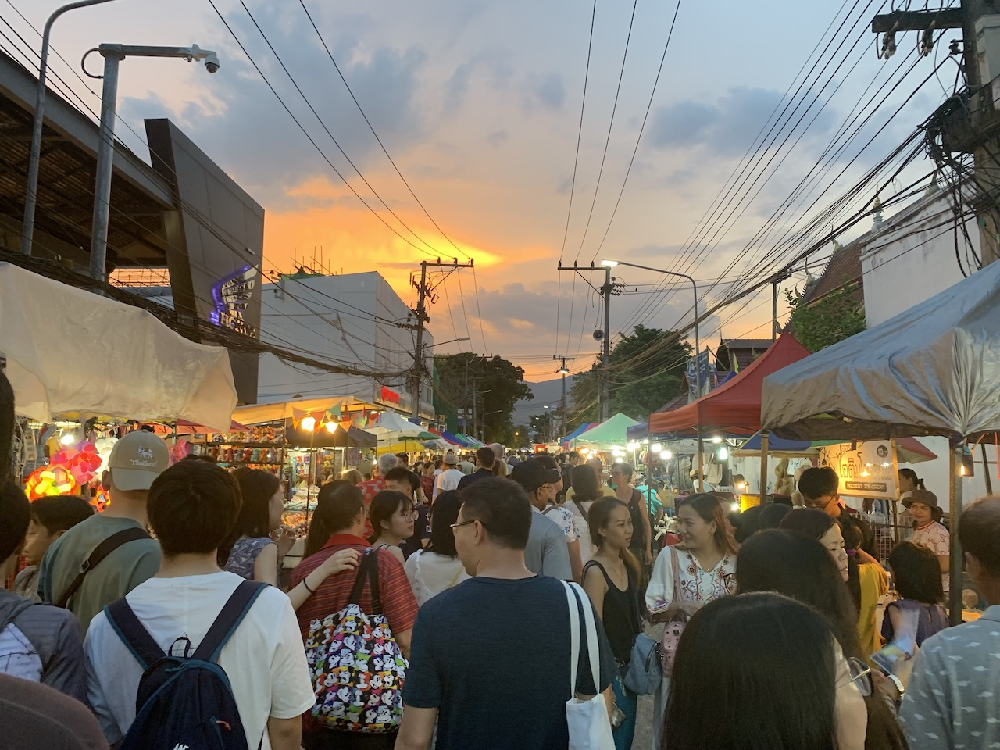
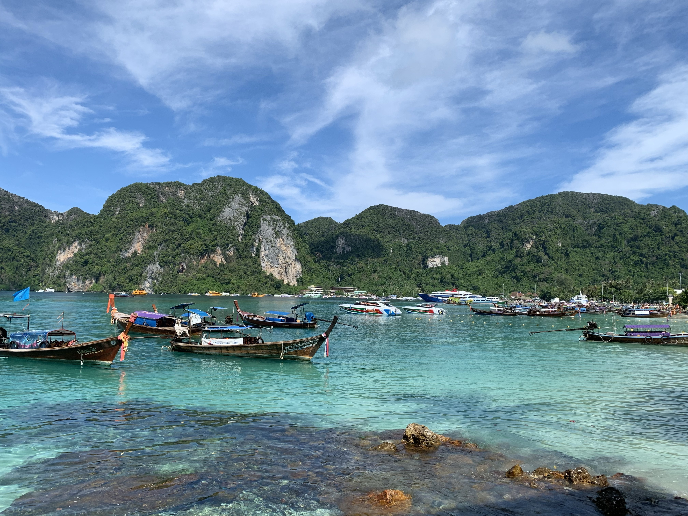
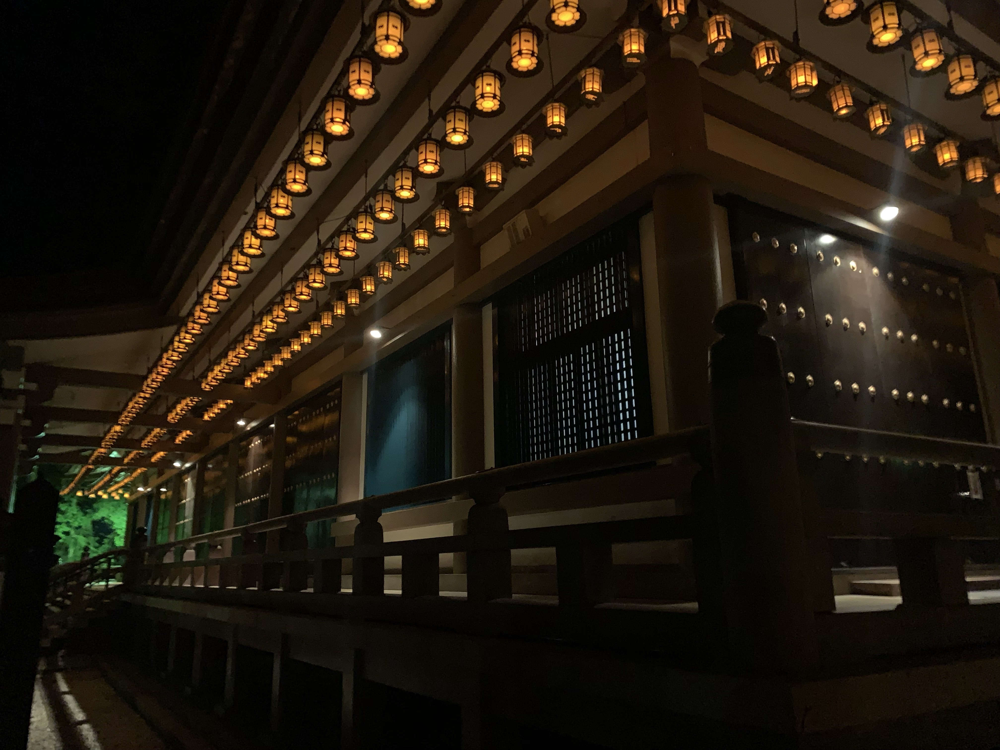
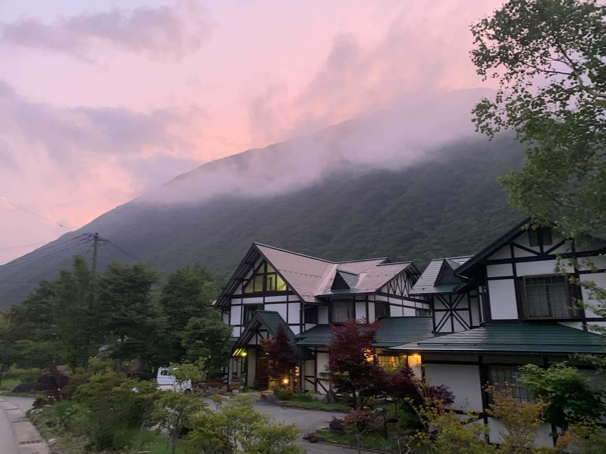

Last summer, I had the opportunity to explore multiple Asian countries
over the course of three months. Stops included Indonesia, Cambodia,
Thailand & Japan, along with a one month stay in Osaka, Japan to work
on a study abroad research project with the Illinois Institute of
Technology. This webpage serves as a resource guide to those who are
interested in visiting these locations. Below are the highlights and most
memorable moments during my travels.
Angkor Wat
Photo of Angkor Wat, Cambodia during sunrise. Angkor Wat is
located in Siem Reap, Cambodia and is the largest religious monument in
the world. I booked my personal driver and tours through
Driver Srey:
The Women Drivers of Siem Reap.
Cambodian Circus

Phare, the Cambodian Circus, is also located in Siem Reap.
Preformers combine therater, music, dance and acrobatics to tell
traditional stories. Tickets start at $18 (USD) & can be purchased
here. All funds support
Cambodian youth in education, professional arts & social support.
Chiang Mai Night Market

The famous Chiang Mai Night Market is held Sundays from
4pm to midnight. Here you can find food, listen to live music and barter
for unique items. It is popular for tourists and locals alike. For more
information, check out this
blog
Phi Phi Island

Phi Phi Island is one of the many islands off the coast
of Thailand. If you're looking for a more laid-back, less party-filled
island Phi Phi is it. It's best to fly into Krabi or Phuket & take a
ferry from there. I highly recommend bartering for an island hopping day
tour!
Temple Stay in Koyasan, Japan

Koyasan is a popular destination to visit if you are
interested in spending the night
in a Buddhist temple. Also home to a UNESCO World Heritage Site, Mount
Koya is a great place to go if you want to escape the crowded cities.
Takayama, Japan

Takayama is another less populated town. Takayama is known
for its carpentry and architecture. I highly recommend
Ebisu for soba noodles. The restaurant provides a cartoon book in
multiple languages to teach customers how to properly eat soba!